COV-723 - Hidrodinâmica para Engenharia Oceânica#
Autor: Evandro F. de Paula Filho
Professor: Antônio Fernandes
Programa de Engenharia Oceânica - Copee/UFRJ - Trimestre 2023.1
Este documento compreende a resolução da lista 7 da disciplina de Hidrodinâmica para Engenharia Oceânica ministrada no primeiro trimestre de 2023.1 pelo profº Antonio Carlos Fernandes.
Espectro de Pierson-Moskowitz Modificado#
import numpy as np
from matplotlib import pyplot as plt
import random
from scipy.signal import find_peaks, argrelextrema
from scipy import integrate
import pandas as pd
Hs = 7.8
Tz = 9.2
T1 = 1.086*Tz
dw = 0.01
w = np.arange(0.01, np.pi/2, dw)
S_w = ((173*Hs**2)/(T1**4))*(w**(-5))*np.exp(-(692/(T1**4))*w**(-4))
N = 3
plt.figure(figsize=(12,6))
plt.plot(w, S_w, label=r'$S_{\zeta}(\omega)$')
plt.grid()
plt.legend()
plt.title(r'Espectro de Pierson-Moskowitz Modificado - $H_s$ = {Hs} m e $T_1$ = {T1:.2f} s'.format(Hs = Hs, T1=T1))
plt.xlabel(r'$\omega$, rad/s')
plt.ylabel(r'$S_{\zeta}(\omega)$, m²/rads', loc='top', labelpad=-10, rotation=0)
plt.show()
dw = w[1]-w[0]
t = np.arange(0, 300, 0.01)
zeta_w = np.sqrt(2*S_w*dw)
zeta_t = np.zeros_like(t)
zeta_m = np.zeros(N)
sig_zeta = np.zeros(N)
T1_ts = np.zeros(N)
T2_ts = np.zeros(N)
for n in range(0, N):
for elev, freq in zip(zeta_w, w):
fase = random.uniform(0, 2*np.pi)
z = elev*np.cos(-freq*t + fase)
zeta_t += z
plt.figure(figsize=(12,6))
peaks, _ = find_peaks(zeta_t, None)
valleys = argrelextrema(zeta_t, np.less)
t_ind = []
for ind in range(len(zeta_t)):
if ind > 0:
if zeta_t[ind] > 0 and zeta_t[ind-1] < 0:
t_ind.append(ind)
plt.plot(t, zeta_t)
plt.plot(t[peaks], zeta_t[peaks] , "x", color='g')
plt.plot(t[valleys], zeta_t[valleys] , "x", color='r')
plt.plot(t[t_ind], zeta_t[t_ind], "x", color='k')
plt.axhline(y=0, color='gray')
plt.title(f'Série temporal - Elevação da onda - {n+1}ª simulação')
plt.xlabel('t, s')
plt.ylabel(r'$\zeta(t)$, m', loc='top', labelpad=-10, rotation=0)
plt.grid()
plt.show()
zeta_m[n] = np.mean(zeta_t[peaks])
sig_zeta[n] = np.std(zeta_t[peaks])
T1_ts[n] = np.mean([t[peaks][i]-t[peaks][i-1] for i in range(len(t[peaks])) if i > 0])
T2_ts[n] = np.mean([t[t_ind][i]-t[t_ind][i-1] for i in range(len(t[t_ind])) if i > 0])
T1_spc = 2*np.pi*(integrate.simpson(S_w, w)/integrate.simpson(S_w*w, w))
T2_spc = 2*np.pi*np.sqrt((integrate.simpson(S_w, w)/integrate.simpson(S_w*w**2, w)))
elev_m = Hs*np.sqrt(np.log(0.5)/(-2))/2
sig_elev = np.sqrt(integrate.simpson(S_w, w))
dict = {"Espectro": [elev_m, sig_elev, T1_spc, T2_spc]}
for n in range(0, N):
dict[f"Simulação {n+1}"] = [zeta_m[n], sig_zeta[n], T1_ts[n], T2_ts[n]]
df = pd.DataFrame(data = dict, index = [r"$\bar{{\zeta}}$", r"$\sigma_\zeta$", r"$T_1$", r"$T_2$"])
df
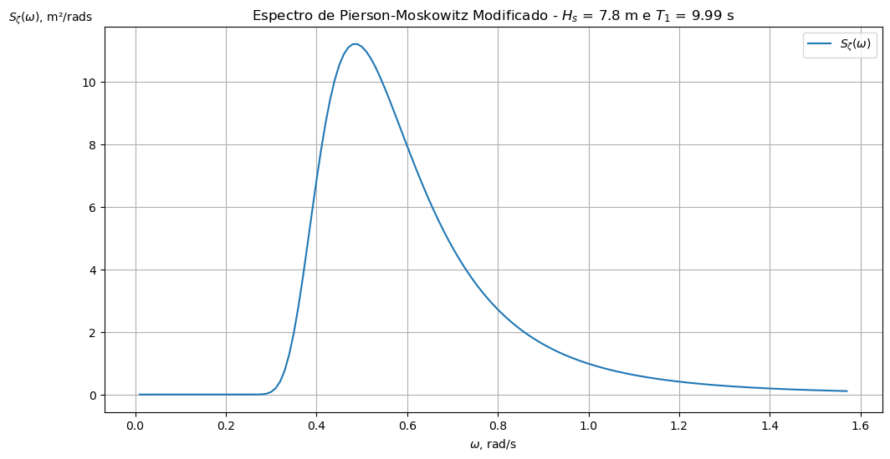
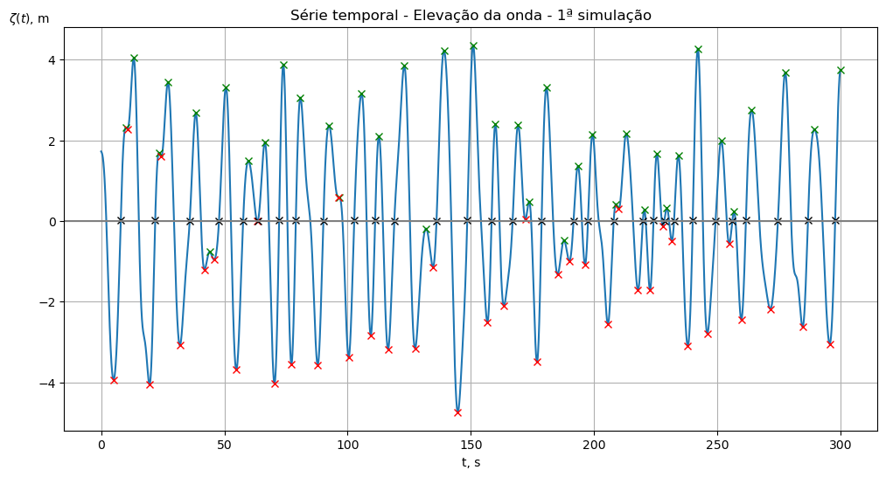
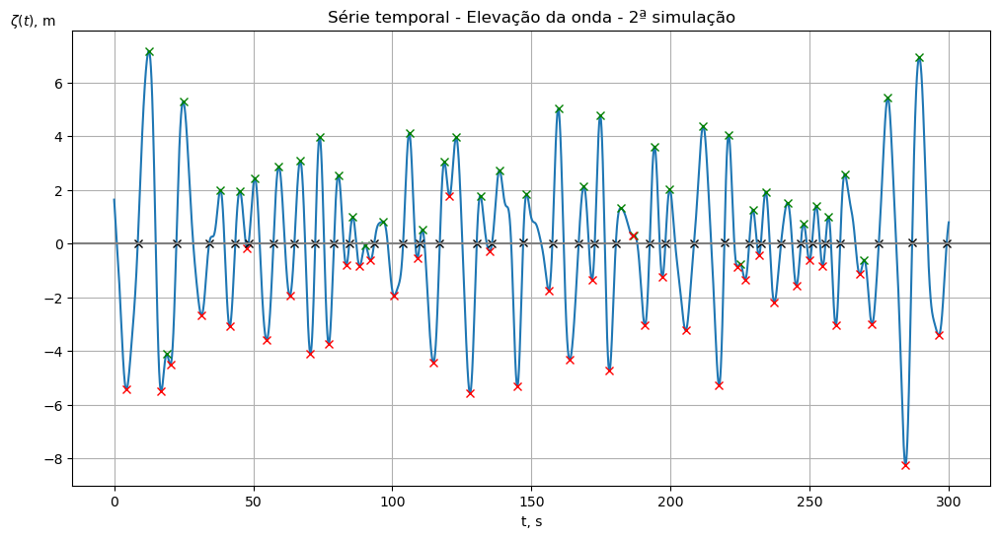
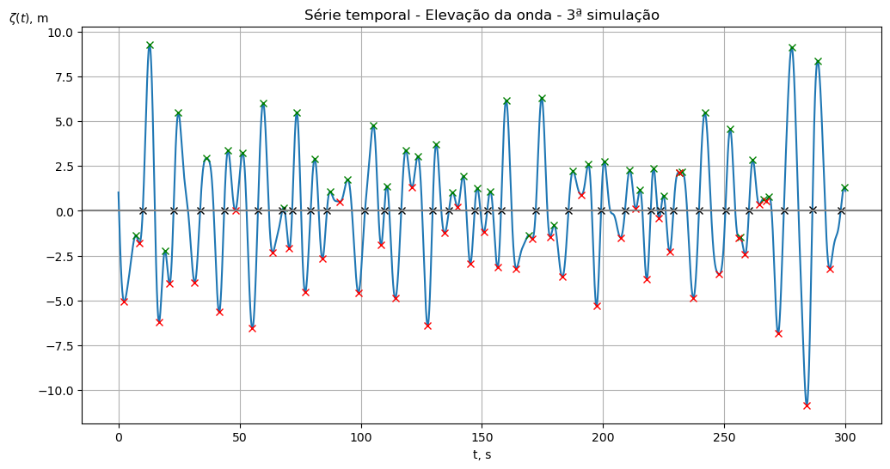
| Espectro | Simulação 1 | Simulação 2 | Simulação 3 | |
|---|---|---|---|---|
| $\bar{{\zeta}}$ | 2.295950 | 2.169982 | 2.406037 | 2.729375 |
| $\sigma_\zeta$ | 1.938888 | 1.401565 | 2.126752 | 2.650422 |
| $T_1$ | 10.263139 | 7.631053 | 7.100769 | 6.798605 |
| $T_2$ | 9.745496 | 9.661667 | 8.551471 | 9.930345 |
Espectro JONSWAP (Joint North Sea Wave Project) da Bacia de Campos#
import numpy as np
from matplotlib import pyplot as plt
from scipy import integrate
Hs = 5.0
Tz = 8.0
Tp = 1.287*Tz
gama = 6.4*Tp**(-0.491)
dw = 0.01
w = np.arange(0.01, np.pi/2, dw)
f = w/(2*np.pi)
S_f = np.zeros_like(f)
fp = 1/Tp
for freq in f:
ind = np.where(f == freq)
if freq <= fp:
sigma = 0.07
s_f = ( (5/16) * (Hs**2) * Tp * ((fp/freq)**5) * (1-0.287*np.log(gama)) *
np.exp(-1.25*(freq/fp)**(-4))*gama**np.exp((-(freq-fp)**2)/(2*(sigma**2)*fp**2)))
else:
sigma = 0.09
s_f = ( (5/16) * (Hs**2) * Tp * ((fp/freq)**5) * (1-0.287*np.log(gama)) *
np.exp(-1.25*(freq/fp)**(-4))*gama**np.exp((-(freq-fp)**2)/(2*(sigma**2)*fp**2)))
S_f[ind] = s_f
T1 = 0.772*Tp
S_wPM = ((173*Hs**2)/(T1**4))*(w**(-5))*np.exp(-(692/(T1**4))*w**(-4))
S_fPM = S_wPM*2*np.pi
S_w = S_f/(2*np.pi)
plt.figure(figsize=(12,6))
plt.plot(w, S_w, label='JONSWAP')
plt.plot(w, S_wPM, label='Pierson-Moskowitz Modificado')
plt.grid()
plt.legend()
plt.title(r'Espectro JONSWAP e Pierson-Moskowitz - $H_s$ = {Hs} m e $T_1$ = {T1:.2f} s'.format(Hs = Hs, T1=Tz))
plt.xlabel(r'$\omega$, rad/s')
plt.ylabel(r'$S_{\zeta}(\omega)$, m²/s', loc='top', labelpad=-10, rotation=0)
plt.show()
x = np.arange(-5, 5, 0.1)
plt.figure(figsize=(12,6))
plt.plot(x, 3.3**x)
plt.grid()
plt.title('Parâmetro de pico')
plt.xlabel('x')
plt.ylabel(r'$\gamma$', loc='top', labelpad=-10, rotation=0)
plt.show()
RMS_PM = np.sqrt(integrate.simpson(S_wPM, w))
RMS_J = np.sqrt(integrate.simpson(S_w, w))
print(f"RMS para espectro de Pierson-Moskowitz: {RMS_PM:.3f}")
print(f"RMS para espectro de JONSWAP: {RMS_J:.3f}")
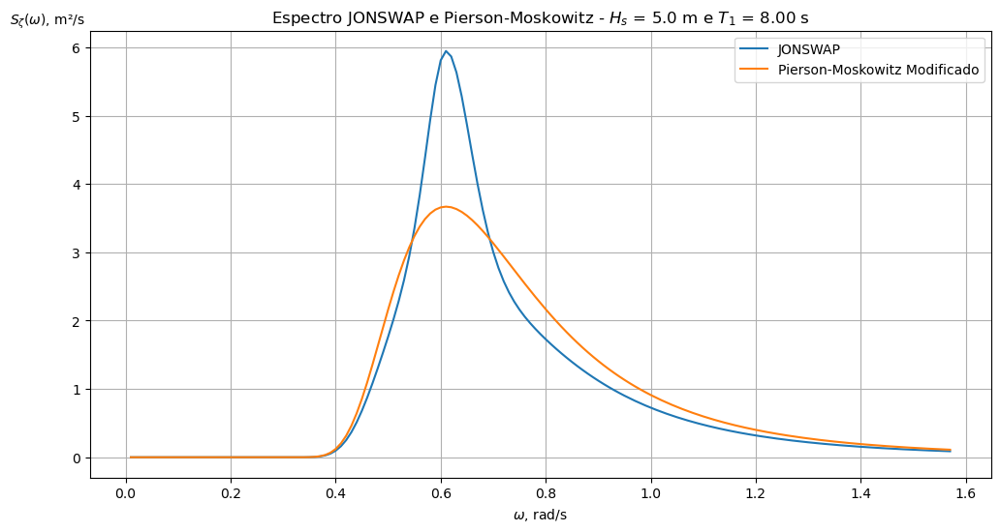
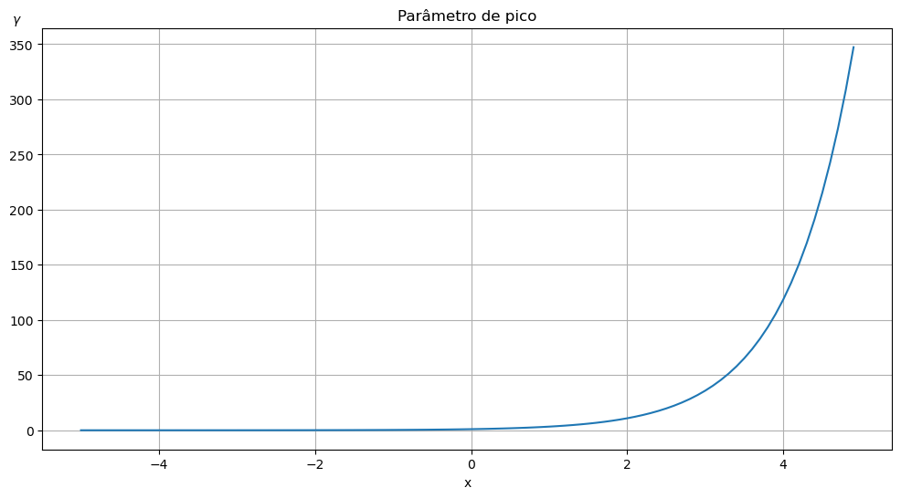
RMS para espectro de Pierson-Moskowitz: 1.232
RMS para espectro de JONSWAP: 1.235
O parâmetro de pico reproduz a proeminência do espectro no período de pico espectral quando comparado ao espectro de Pierson-Moskowitz. Este parâmetro não altera quntidade de energia do espectro, entretanto ele desloca o pico do espectro além de acentuá-lo conforme aumenta.s.
Série temporal - Bacia de Campos#
import numpy as np
from matplotlib import pyplot as plt
import random
from scipy.signal import find_peaks, argrelextrema
from scipy import integrate
from scipy.fft import fft, fftfreq
import pandas as pd
df = pd.read_excel('ON111011.xlsx', header=None)
df = df.drop([0, 1])
t = np.arange(0, df.shape[0], 1)
plt.figure(figsize=(13,6))
plt.plot(t, df.iloc[:,0])
plt.xlim((0, t[-1]))
plt.grid()
plt.show()
T_c = 64 # Tempo de corte
# 1 - Média do sinal temporal
zeta_m = np.mean(df.iloc[:,0])
# 2 - Desvio padrão do sinal temporal
sig = np.std(df.iloc[:,0])
# 3 - Hs usando os primeiros 64 s da série temporal
S64 = df.iloc[0:T_c-1,0]
S64_ord = S64.sort_values(ascending=False).iloc[0:int(S64.shape[0]/3)]
Hs_64 = 2*np.mean(S64_ord)
sig_64 = np.std(S64_ord)
# 4 - Altura máxima por observação dos primeiros 64s da série temporal
Hmax_64 = 2*S64_ord.iloc[0]
# 5 - O período de zero ascendente médio usando valor inteiro de períodos em um total de 64 s
peaks, _ = find_peaks(S64, None)
t_ind = []
for ind in range(S64.shape[0]):
if ind > 0:
if S64.iloc[ind] > 0 and S64.iloc[ind-1] < 0:
t_ind.append(ind)
plt.figure(figsize=(13,6))
plt.plot(t[0:T_c-1], S64)
plt.xlim((0, t[T_c-1]))
plt.grid()
plt.axhline(y=0, color='gray')
plt.show()
Tz_64 = np.mean([t[t_ind][i]-t[t_ind][i-1] for i in range(len(t[t_ind])) if i > 0])
# 6 - O período entre cristas usando valor inteiro de períodos em um total de 64 s
T_64 = np.mean([t[peaks][i]-t[peaks][i-1] for i in range(len(t[peaks])) if i > 0])
# 7 e 8 - Espectro usando FFT + Alisamento usando janela de Hanning
s = fft(df.iloc[:,0])
N = df.shape[0]
dw = 1/(2*np.pi)
w = fftfreq(N, dw)[:N//2]
if w[0] == 0.0:
w[0] = 0.001
S = 2.0/N * np.abs(s[0:N//2])
m = 10
s = S.copy()
W = w.copy()
for n in range(0, m):
S_n = np.array(
[0.5*s[i] + 0.25*(s[i-1] + s[i+1]) for i in range(1, len(s)-1)]
)
s = S_n
w_n = W[1:len(W)-1]
W = w_n
plt.figure(figsize=(13,6))
plt.plot(w_n, S_n, color='k', label='Filtrado')
plt.plot(w, S, label='Sem alisamento')
plt.grid()
plt.legend()
plt.show()
# 9 - Média usando resultado de 7
S_m = np.sqrt(np.mean(S))
# 10 - Desvio padrão usando resultado de 7
sig_spc = np.sqrt(integrate.simpson(S, w))
# 11 - Hs usando usando resultado de 7
Hs_spc = 4*sig_spc
# 12 - Altura máxima usando resultado de 7
Hmax_spc = 1.86*Hs_spc
# 13 - Período médio T1
T1_spc = 2*np.pi*(integrate.simpson(S, w)/integrate.simpson(S*w, w))
# 14 - Período médio T2
T2_spc = 2*np.pi*np.sqrt((integrate.simpson(S, w)/integrate.simpson(S*w**2, w)))
# 15 - Período de pico de 8
Tp_spec = 2*np.pi/w_n[np.where(S_n==S_n.max())][0]
# 16 - Estimativa de largura espectral usando resultado de 7
T4_spec = 2*np.pi*np.sqrt((integrate.simpson(S*w**2, w)/integrate.simpson(S*w**4, w)))
ep = np.sqrt(1-(T4_spec/T2_spc)**2)
# 17 - Comparar resultado de 7 com espectro PM modificado (ITTC) com resultados de 11 e 13
S_pm = ((173*Hs_spc**2)/(T1_spc**4))*(w**(-5))*np.exp(-(692/(T1_spc**4))*w**(-4))
plt.figure(figsize=(13,6))
plt.plot(w_n, S_n, color='k', label='Filtrado')
plt.plot(w, S_pm, label='Pierson-Moskowitz Modificado')
plt.grid()
plt.legend()
plt.show()
# 18 - Obter período de pico através do espectro obtido em 17
Tp_pm = 2*np.pi/w_n[np.where(S_pm==S_pm.max())][0]
# 19 - Definir os parâmetros do espectro JONSWAPs à maneira do CENPES
gama = 6.4*Tp_spec**(-0.491)
Tz_j = Tp_spec*np.sqrt((5+gama)/(10.89+gama))
f = w/(2*np.pi)
Sj_f = np.zeros_like(f)
fp = 1/Tp_spec
for freq in f:
ind = np.where(f == freq)
if freq <= fp:
sigma = 0.07
s_f = ( (5/16) * (Hs_spc**2) * Tp_spec * ((fp/freq)**5) * (1-0.287*np.log(gama)) *
np.exp(-1.25*(freq/fp)**(-4))*gama**np.exp((-(freq-fp)**2)/(2*(sigma**2)*fp**2)))
else:
sigma = 0.09
s_f = ( (5/16) * (Hs_spc**2) * Tp_spec * ((fp/freq)**5) * (1-0.287*np.log(gama)) *
np.exp(-1.25*(freq/fp)**(-4))*gama**np.exp((-(freq-fp)**2)/(2*(sigma**2)*fp**2)))
Sj_f[ind] = s_f
Sj_w = Sj_f/(2*np.pi)
plt.figure(figsize=(13,6))
# plt.plot(w_n, S_n, color='k', label='Filtrado')
plt.plot(w, Sj_w, label='JONSWAP')
plt.plot(w_n, S_n, color='k', label='Filtrado')
plt.plot(w, S_pm, label='Pierson-Moskowitz Modificado')
plt.grid()
plt.legend()
plt.show()
# 20 - Tabelas comparativas
sig_PM = np.sqrt((integrate.simpson(S_pm, w)))
Hs_PM = 4*sig_PM
T1_PM = 2*np.pi*(integrate.simpson(S_pm, w)/integrate.simpson(S_pm*w, w))
T2_PM = 2*np.pi*np.sqrt((integrate.simpson(S_pm, w)/integrate.simpson(S_pm*w**2, w)))
sig_J = np.sqrt((integrate.simpson(Sj_w, w)))
Hs_J = 4*sig_J
T1_J = 2*np.pi*(integrate.simpson(Sj_w, w)/integrate.simpson(Sj_w*w, w))
T2_J = 2*np.pi*np.sqrt((integrate.simpson(Sj_w, w)/integrate.simpson(Sj_w*w**2, w)))
dict = {"Série temporal - 64 s": [Hs_64, sig_64, T_64, Tz_64],
"Espectro - FFT": [Hs_spc, sig_spc, T1_spc, T2_spc],
"Pierson-Moskowitz": [Hs_PM, sig_PM, T1_PM, T2_PM],
"JONSWAP": [Hs_J, sig_J, T1_J, T2_J]}
df = pd.DataFrame(data = dict, index = [r"$H_s$ , m", r"$\sigma$", r"$T_1$ , s", r"$T_z$ , s"])
df
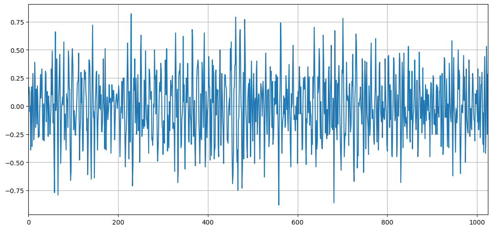
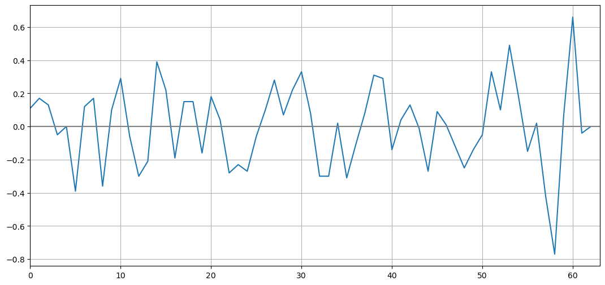
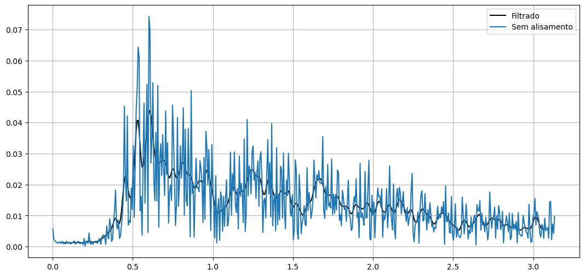
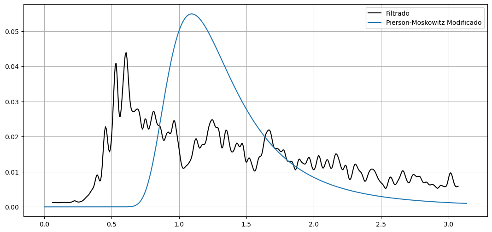
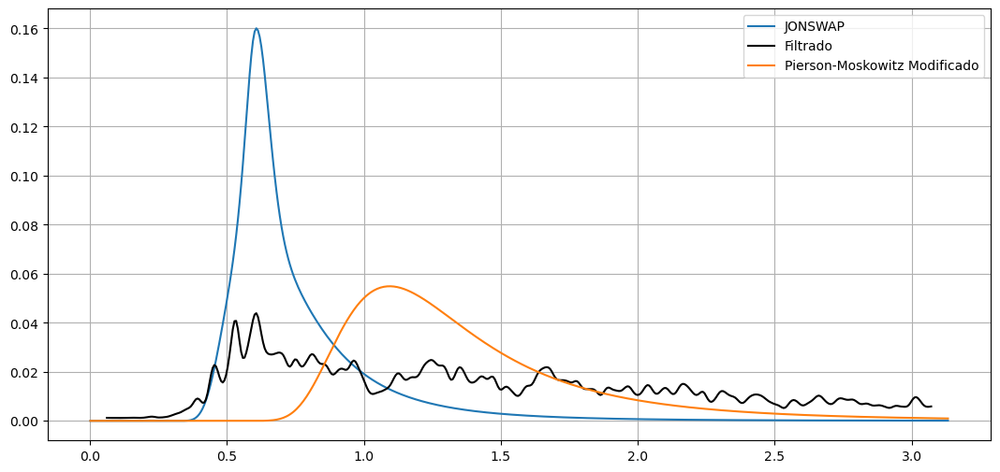
| Série temporal - 64 s | Espectro - FFT | Pierson-Moskowitz | JONSWAP | |
|---|---|---|---|---|
| $H_s$ , m | 0.504762 | 0.818708 | 0.811136 | 0.817293 |
| $\sigma$ | 0.133698 | 0.204677 | 0.202784 | 0.204323 |
| $T_1$ , s | 3.470588 | 4.434663 | 4.601729 | 8.410580 |
| $T_z$ , s | 4.416667 | 3.923538 | 4.392566 | 7.899064 |